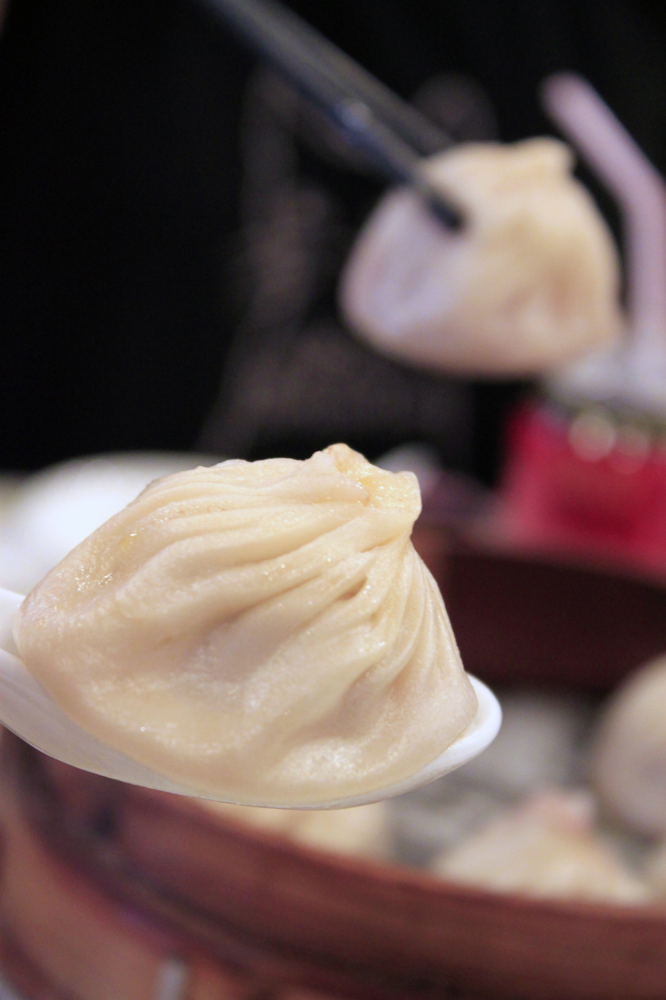

Une cuisine familiale, simple et authentique.

Situé dans le 11ᵉ arrondissement de Paris à Belleville, La Maison Pourpre est un petit restaurant familial fréquenté notamment par une clientèle chinoise qui y retrouve les goûts du pays.
Ici, pas de mise en scène. Une cuisine honnête, des plats généreux, et un accueil sans façon.
La carte regroupe des classiques appréciés — bœuf aux cinq parfums, raviolis grillés, travers de porc, soupes de nouilles — ainsi que des plats sur plaque chauffante qui font la réputation de la maison.
Découvrir la carteDes recettes inspirées de la cuisine chinoise traditionnelle.
Une cuisine pensée pour être dégustée ensemble.
Un accueil chaleureux dans un cadre simple et familial.
Nous vous accueillons tout au long de la semaine pour partager avec vous les saveurs de notre cuisine.
Retrouvez-nous au cœur du quartier Belleville, au 13 Rue Louis Bonnet dans le 11ᵉ arrondissement de Paris.
Contact